Usability Testing
I created an interactive prototype of the commission-free self-drive car rental app and conducted an initial usability test with a small group of potential users, including both renters and car owners. The test was designed to gather insights into the app’s intuitiveness, clarity, and overall user experience.
For the test, users were given a realistic scenario: a renter needed to book a car quickly for an urgent trip, while an owner needed to manage their car listing efficiently. Participants were asked to complete three tasks. First, they navigated through the app to search for and book a car, allowing me to assess the clarity and simplicity of the booking process. Second, after booking, renters were asked to contact the car owner directly to confirm pickup and communicate any urgency, testing the communication flow within the app. Third, users were asked to leave feedback after completing the rental, evaluating the ease of post-booking interaction.
Engaging users with these practical tasks provided firsthand feedback on usability and highlighted areas for improvement, such as reducing steps in the booking flow, enhancing visibility of car details, and simplifying owner notifications. The insights gained from this testing phase were instrumental in refining the app’s design, ensuring that both renters and car owners could interact with the platform seamlessly, efficiently, and confidently.
Following the usability testing phase for the commission-free self-drive car rental app, I employed affinity mapping to systematically organize and interpret the user feedback. By grouping similar observations and pain points, I was able to identify recurring issues in the booking process, car management, and communication features. Using Nielsen’s Severity Rating Scale, I prioritized the most critical problems that required immediate attention in the next design iteration, ensuring that the changes would have the greatest impact on user experience.
To refine the visual appeal and usability of the app, I also conducted a preference test, surveying users’ reactions to various UI components such as layouts, iconography, and color schemes. These insights were instrumental in evolving the interface, confirming that the chosen design elements resonated with users while supporting a clear, intuitive experience. Through this iterative approach, the app’s workflow, aesthetics, and interaction patterns were continuously enhanced, resulting in a design that was both user-friendly and visually engaging for renters and car owners alike.
 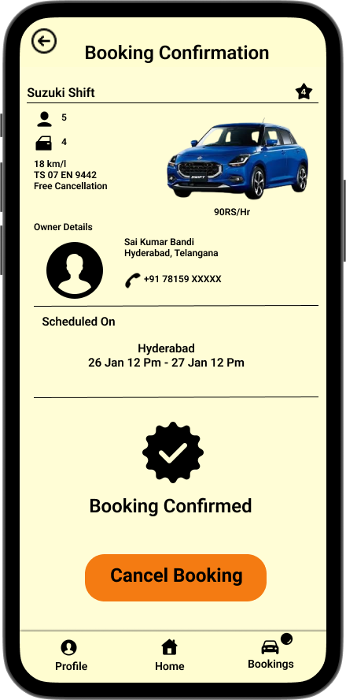
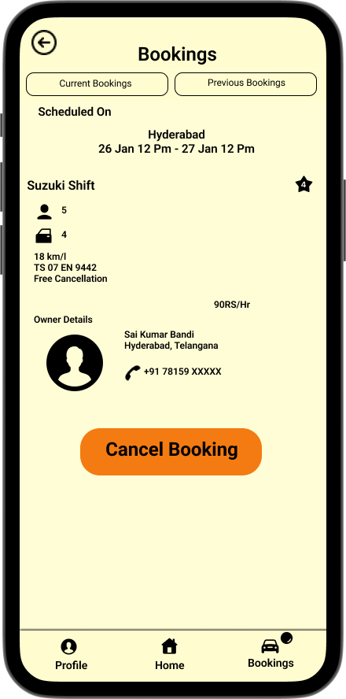
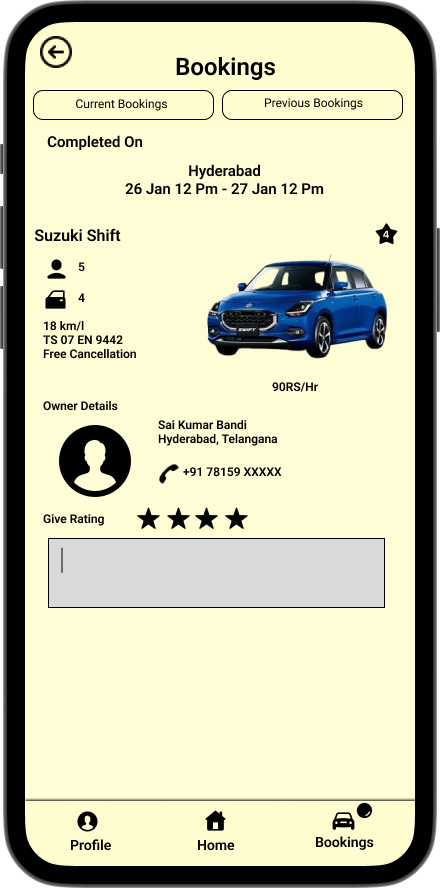
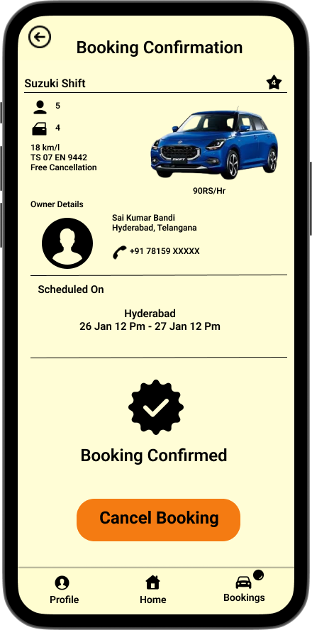
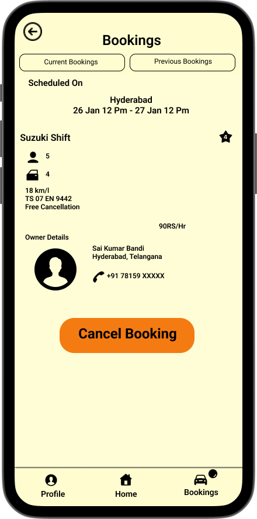
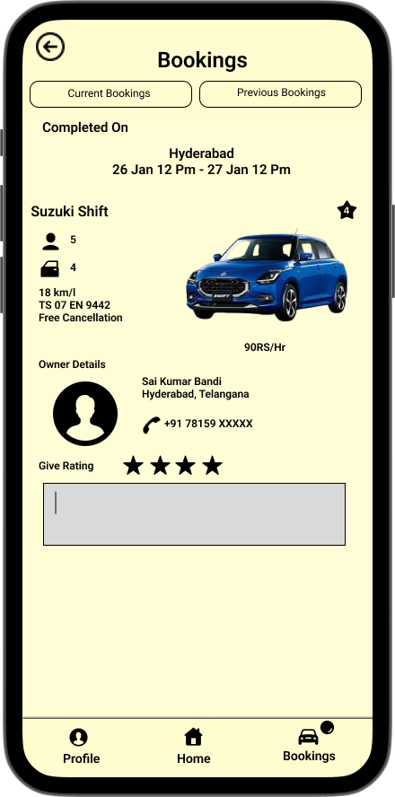
 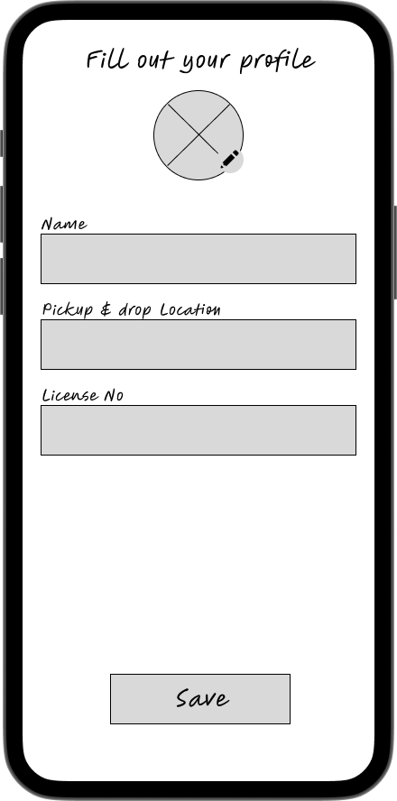
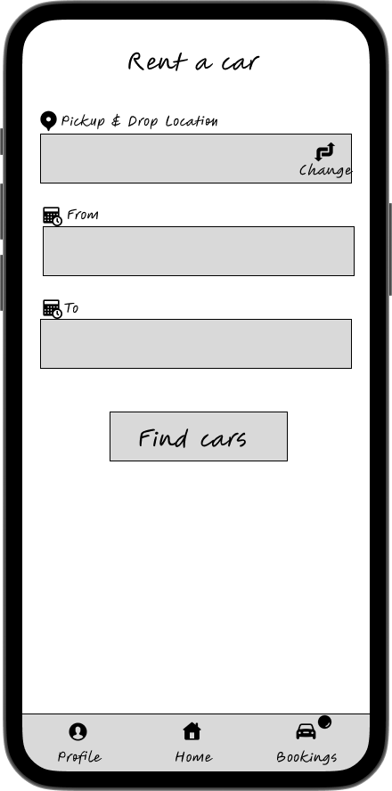
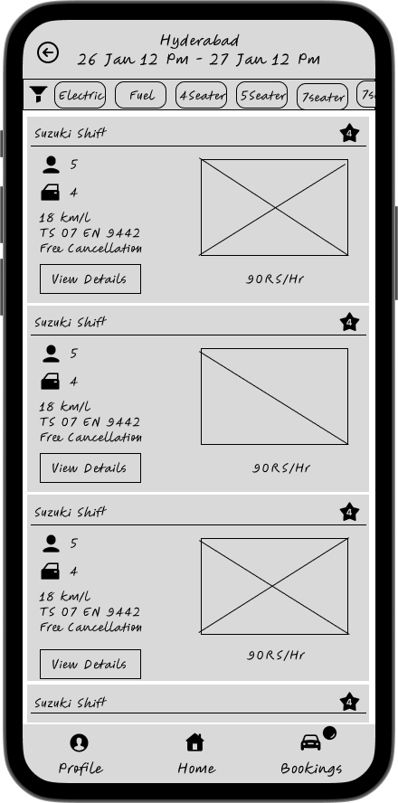
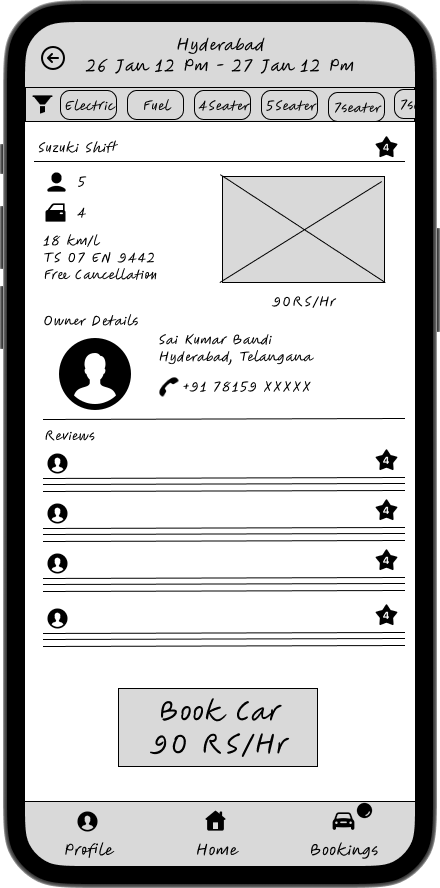
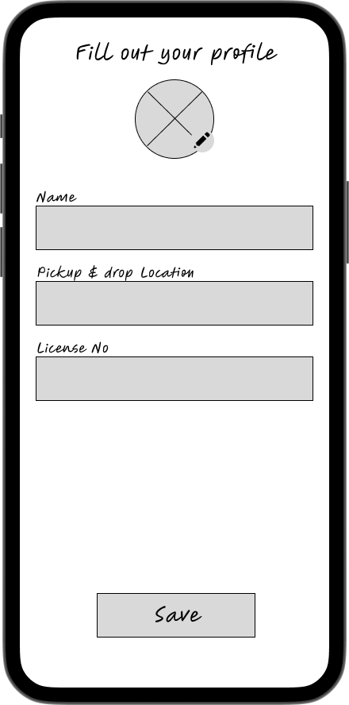
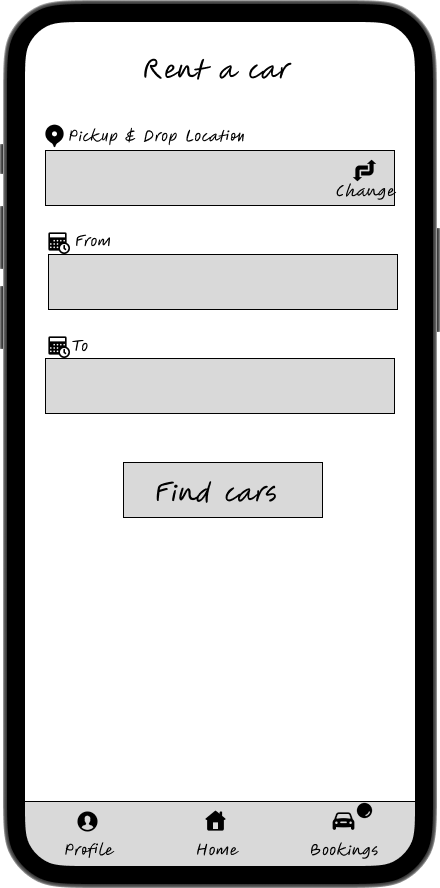
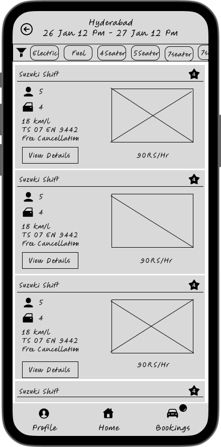
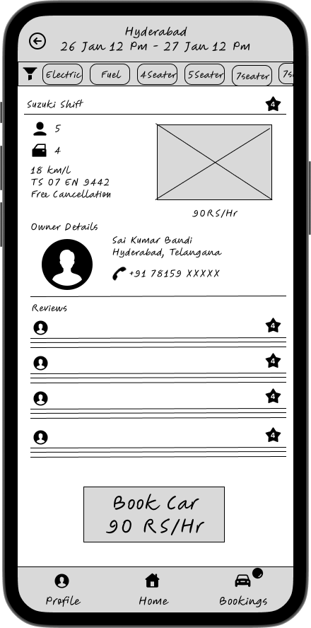
 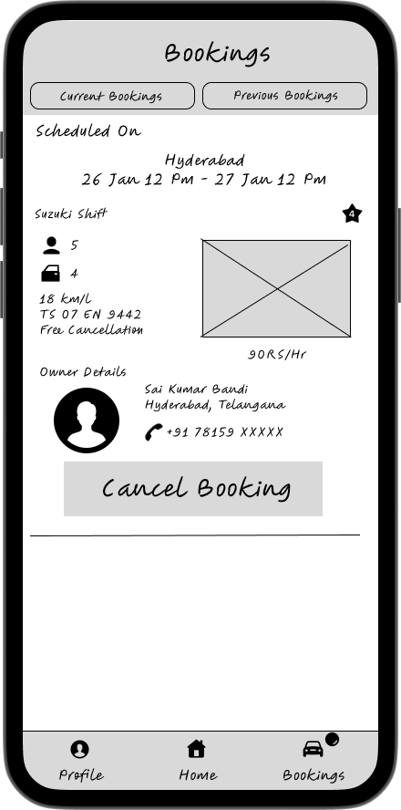
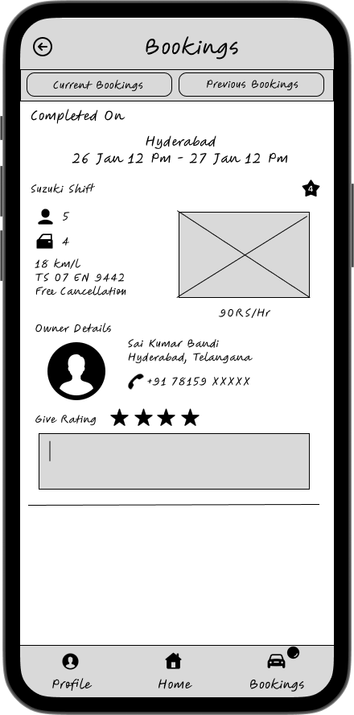
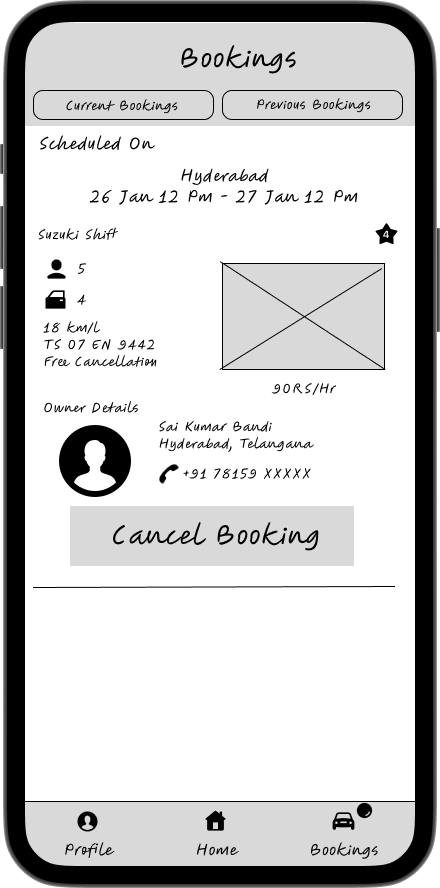
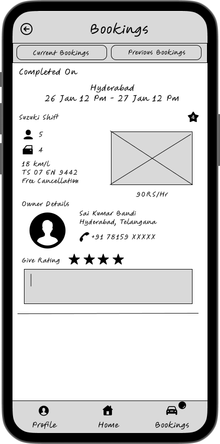